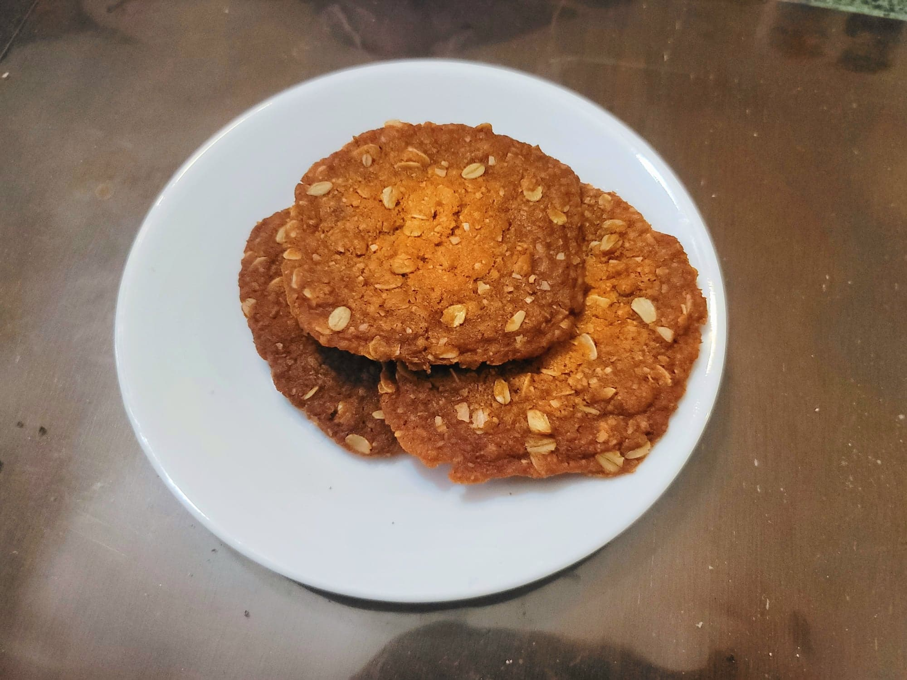

Anzac Biscuits

Ingredients:
- 150 g Flour
- 100 g Rolled oats
- 80 g Desiccated coconut
- 165 g Powdered sugar or White sugar
- 150 g Butter
- 90 g Golden syrup
- 1 tsp Baking soda
Instructions:
- Preheat an oven to 350 degrees Fahrenheit. Line baking sheets with parchment paper.
- Into a large mixing bowl, mix in the flour, oats, coconut, and sugar.
- Add the butter and golden syrup to a saucepan. Heat over medium-high heat and stir until the butter has melted completely. Then stir in the baking soda and remove from the heat. It should fizz up immediately. Transfer to the dry ingredients and knead to form a dough.
- Form level 1 tbsp patties with the cookie dough and place onto the baking sheets, abouth 1 inch apart. Bake for about 15 minutes or to preference, rotating the baking sheets half-way for even browning. Removing the cookies early will result in chewier cookies.
- Remove from the oven and let cool completely. They will become crispier as they cool. Serve at room temperature.